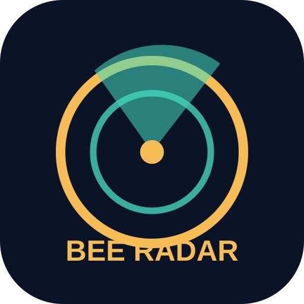

BEE INTELLIGENCE · V2.0
Bee哥 · 暗线情报雷达
每天搜线索 · 逐条查证 · 寻找商机
PUBLIC INTELLIGENCE WATCH
情报不是结论，线索需要证据。
自动聚合公开媒体标题，涵盖政商关系、商业犯罪、金融政策、AI舆论、灰产与神秘事件。
正在读取信息源...
0
已收录线索
0
当前设备未读
0
已收藏线索
⚠️ 自动收录仅代表“有媒体报道”，不代表报道中的指控已成立。验证前一律归类“待核实”。
全部
只看未读
只看收藏
↻ 更新
正在载入…